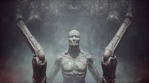

is an atmospheric first-person horror adventure game set in a nightmarish universe of odd forms and somber tapestry.
It is designed around the idea of "being thrown into the world". Isolated and lost inside this dream-like world, you will explore different interconnected regions in a non-linear fashion. The unsettling environment is a character itself.
Every location contains its own theme (story), puzzles and characters that are integral in creating a cohesive world. Throughout the game you will open up new areas, acquire different skill sets, weapons, various items and try to comprehend the sights presented to you.
-Cohesive “lived-in” world - Scorn takes place in an open-ended world with different interconnected regions. Each region is a maze-like structure with various rooms and paths to discover. All the storytelling happens in-game, with no cut-scenes to distract you from the grisly reality of the living, breathing world you’re in. But keep your eyes open - the game won’t show you any sympathy if you miss something important on your uneasy travels. Everything has a reason and purpose - you just need to work out what it is.
-Full body awareness – Players will experience better immersion being aware of the character’s body and movement. Interaction with the world is realistic - objects are picked up with your hands (instead of just floating in midair), machines and instruments are operated by grabbing the controls etc.
-Inventory and ammo management - is defined and limited. It plays a big role in keeping the player in an even greater state of awareness throughout the whole game. Players will have to think about when to fight and when to take cover and how their actions affect the world around them. Different play styles will be needed to advance.
